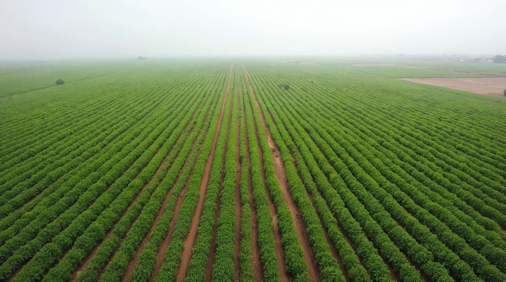
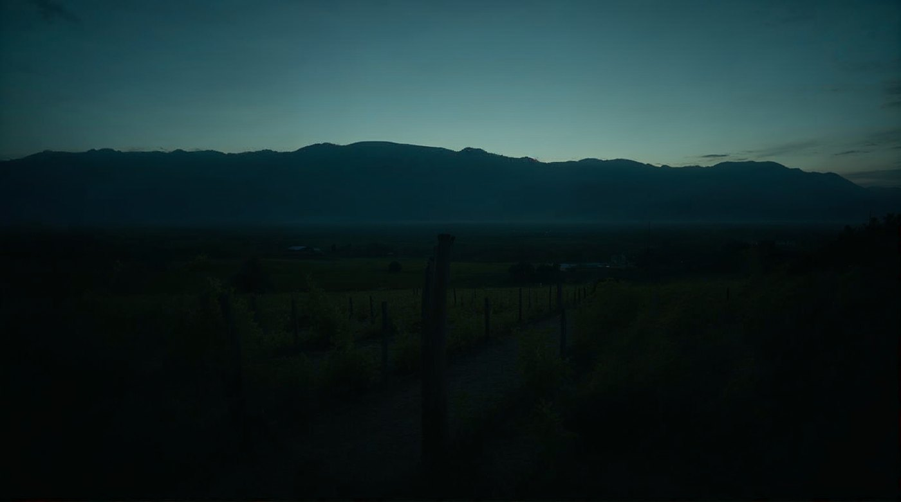
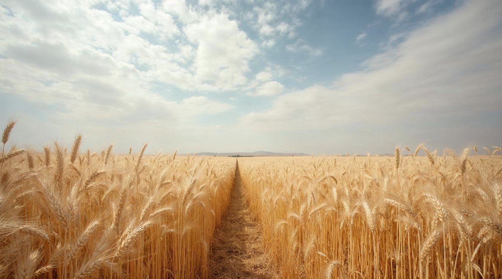

El logotipo sobre fotografía
Por qué no se puede prohibir
Landera vive sobre campo, cielo y cultivo: justo el fondo donde un logotipo se pierde. Acá se norma cómo va.
La regla
No se mira la foto: se mide la zona donde cae el logotipo. La misma fotografía puede pedir tinta arriba y crema abajo.
Zona clara → tinta. Zona oscura → crema. En el medio, velo de tinta hasta llegar a 4,5:1.
El mínimo
Bajo 4,5:1 el logotipo no se entrega. Medido sobre estas fotos, el velo mínimo que cumple es de 20 %.
Cuatro casos, medidos

9,14 : 1Zona clara — tinta sobre el cielo

18,05 : 1Zona oscura — crema sobre el cultivo
Incorrecto — crema sobre zona clara

4,55 : 1Sin contraste — velo de tinta al 20 %
⚠ Fotografía de referencia generada — reemplazar por campos reales de Landera
12 · Logotipo
Landera · Manual de marca